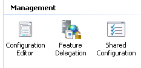

IIS动态压缩
2018-10-15
 次阅读
次阅读
次阅读
文章目录
https://stackoverflow.com/questions/17321131/compression-filter-for-web-api/17331627#17331627
I think you should not do this in an action filter as the modelbinding stage happens before action filters are executed and during modelbinding the formatters could be reading the stream to deserialize it, in which case it would fail.
If you are using IIS, then do the following to setup compression(The following have some snippets from Scott Hanselman’s blog post):
- Enabled the “Dynamic Compression” feature in IIS.
- Back in IIS Manager, go to the page for the SERVER, not the SITE. Click on Configuration Editor:

- From the dropdown, select system.webServer/httpCompression:
- Then click on Dynamic Types and now that you’re in the list editor, think about what types you want compressed. By default / is False, but you could just turn that on. I chose to be a little more picky and added application/atom+xml, application/json, and application/atom+xml;charset=utf-8 as seen below. It’s a little gotcha that application/atom+xml and application/atom+xml;charset=utf-8 are separate entries. Feel free to add what ever mimeTypes you like in here.
- After you’ve added them and closed the dialog, be sure to click Apply and Restart your IIS Service to load the new module.
- Now make requests using Accept-Encoding header and you should see the response as expected.
- EDIT ( in addition to above include “application/json; charset=utf-8” to cover both json formats)
文章作者 p3p3pp3
上次更新 2018-10-15